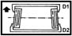

REAR WHEEL TOW-IN
- Path
- Technical Data > MANUFACTURING DATA > 44 SUSPENSION AND WHEELS > 4450 WHEELS AND HUBS > REAR WHEEL TOW-IN
- Kind
- technical data / specifications
- Applies to
- all engines; all production periods
- Interactive page
- https://sloeber94.github.io/elrnDB-fDbl/en/#/2582718
Applies to: all engines; all production periods
Rear wheel toe in (mm) | Validity |  | ||
|---|---|---|---|---|
0 ± 1 | ||||
Standard A (-) - | ||||